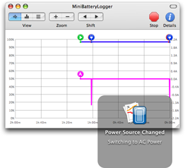

Notifications

MiniBatteryLogger uses Growl  to notify relevant power events even when you’re not looking at its window or reading the log.
to notify relevant power events even when you’re not looking at its window or reading the log.
Growl provides beautiful and fully customizable notifications that are consistent through different applications. If you haven’t installed it yet, you should give it a try.
To customize the behavior of notifications, refer to the MiniBatteryLogger entry under the Applications list of Growl System Preferences pane.